Galeria e Processos Artesanais
Veja as peças das coleções e o que existe antes de cada uma ficar pronta, com descrição completa de todas as imagens.
Como Explorar a Galeria
- Descrição detalhada: abaixo de cada imagem há um botão que abre um texto completo, pensado para leitores de tela. Use Enter ou Espaço para abrir e fechar.
- Filtro por tema: na seção de coleções, escolha Moda Circular, Slow Fashion ou Materiais Ecológicos para ver só as peças de cada página.
- Fonte: cada imagem traz a indicação de onde ela veio.
Coleções em Imagens
Peças dos catálogos de moda circular, slow fashion e materiais ecológicos.
As peças são as mesmas dos catálogos do site, que são fictícios e foram criados para demonstrar o funcionamento da página.
Filtrar por tema
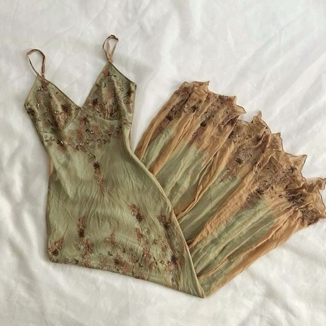
Descrição detalhada da imagem: Vestido longo bordado
Vestido longo verde-claro de alças finas, com bordados de flores em tons de marrom e saia de tule dourado com babados, estendido sobre um lençol branco.
Fonte: [a informar]
Ver no catálogo
Descrição detalhada da imagem: Jaqueta jeans bordada
Jaqueta jeans verde-escura com zíper frontal, cinto e flores bordadas em branco e laranja, sobre um lençol branco.
Fonte: [a informar]
Ver no catálogo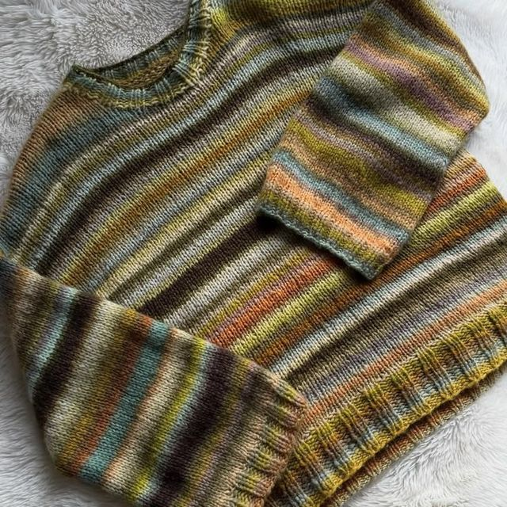
Descrição detalhada da imagem: Suéter listrado de tricô
Suéter de tricô com listras coloridas em tons de verde, laranja, azul e marrom, sobre uma manta branca felpuda.
Fonte: [a informar]
Ver no catálogo
Descrição detalhada da imagem: Bolsa de couro bordada
Bolsa de couro marrom em formato de sela, com flores bordadas em tons de amarelo, rosa e verde.
Fonte: [a informar]
Ver no catálogo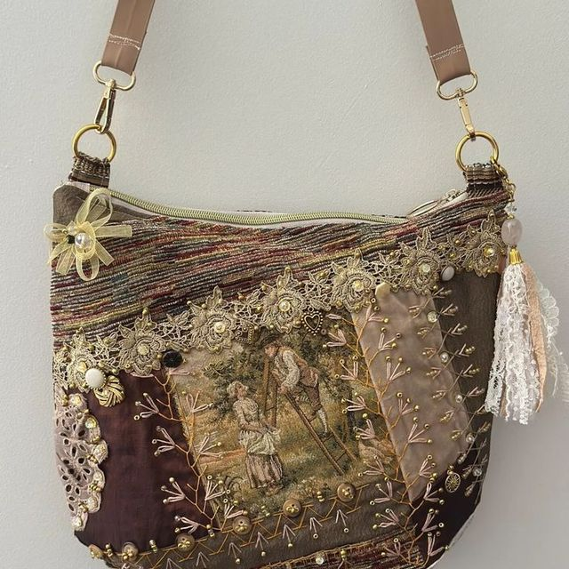
Descrição detalhada da imagem: Bolsa de retalhos patchwork
Bolsa de ombro feita de retalhos em tons de marrom e dourado, com bordados, rendas, contas e uma cena bordada ao centro, com alça larga cor de areia e pingente de renda.
Fonte: [a informar]
Ver as peças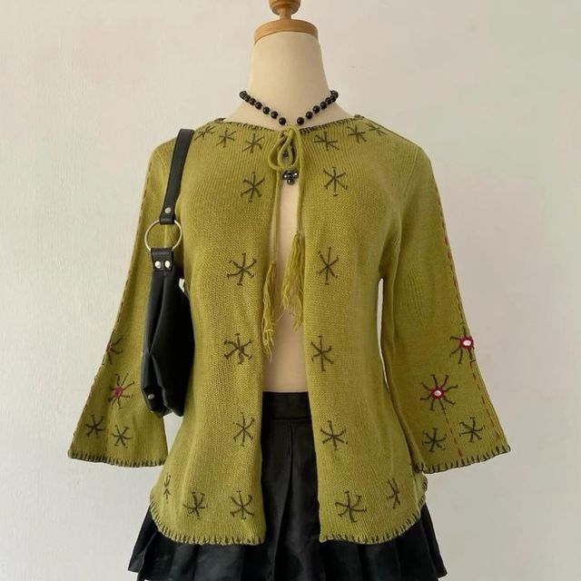
Descrição detalhada da imagem: Casaquinho de tricô bordado
Casaquinho de tricô verde-oliva com bordados de estrelas escuras e detalhes vermelhos, cordão com laço no decote e mangas em sino, exibido em um manequim.
Fonte: [a informar]
Ver as peças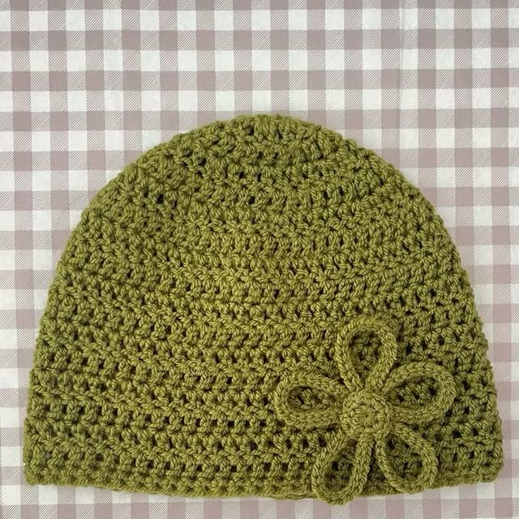
Descrição detalhada da imagem: Gorro de crochê com flor
Gorro de crochê verde-oliva com uma flor de crochê na lateral, sobre uma toalha xadrez rosa-acinzentada e branca.
Fonte: [a informar]
Ver as peças
Descrição detalhada da imagem: Bolsa de jeans reaproveitado
Bolsa transversal feita de jeans reaproveitado, tingida em tons de verde e amarelo, com tachas metálicas, alça ajustável e aba com botão, sobre uma manta cinza felpuda.
Fonte: [a informar]
Ver as peças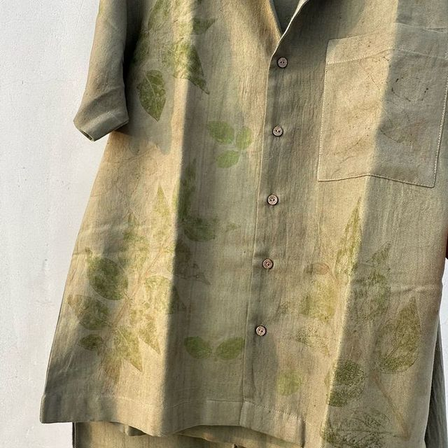
Descrição detalhada da imagem: Camisa com estampa de folhas
Camisa de manga curta em tom verde-acinzentado, com folhas verdes estampadas diretamente no tecido, botões de madeira e bolso no peito.
Fonte: [a informar]
Ver as peças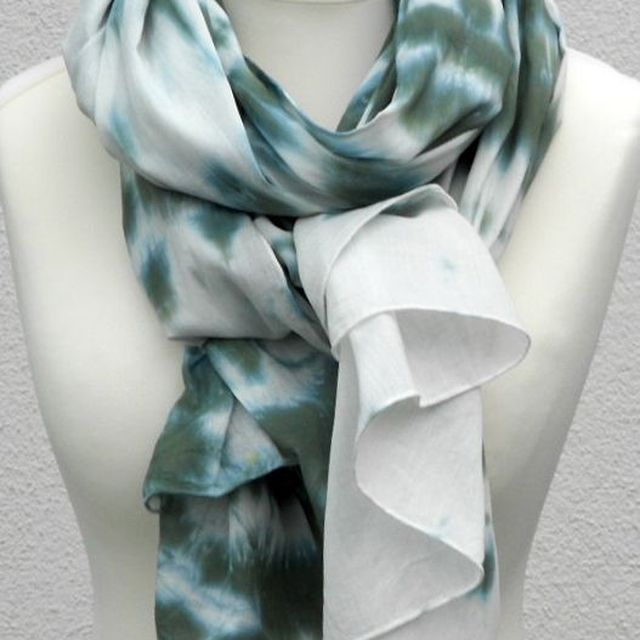
Descrição detalhada da imagem: Echarpe shibori
Echarpe leve com manchas em verde-acinzentado e azul-petróleo sobre fundo branco, no estilo tie-dye, enrolada em um manequim.
Fonte: [a informar]
Ver as peças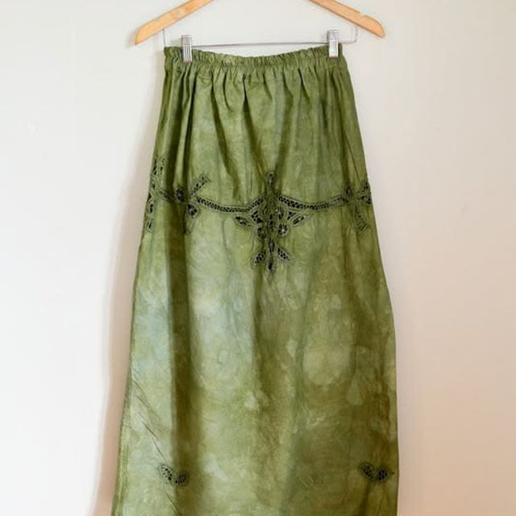
Descrição detalhada da imagem: Saia tingida com renda reaproveitada
Saia longa verde com efeito manchado, cintura com elástico franzido e aplicação de renda vazada na altura do quadril, pendurada em um cabide de madeira.
Fonte: [a informar]
Ver as peças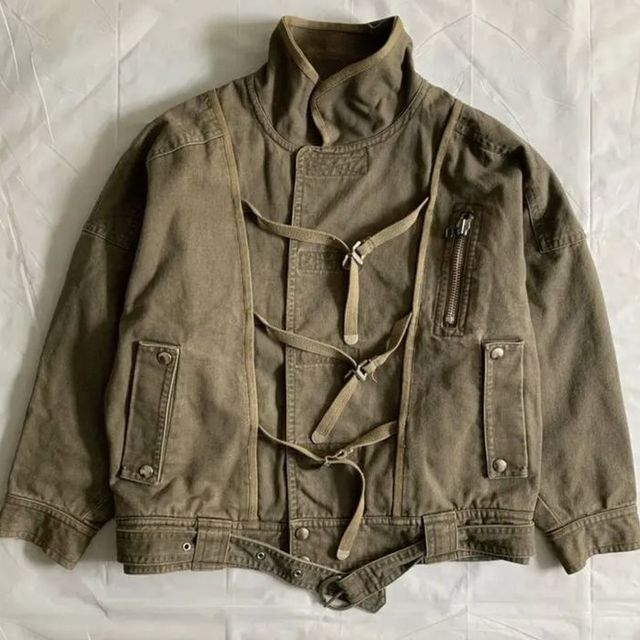
Descrição detalhada da imagem: Jaqueta de brim reaproveitado
Jaqueta ampla cor verde-oliva em tecido de brim, com gola alta, tiras com fivelas na frente, bolsos com botões e zíper no peito, aberta sobre um lençol branco.
Fonte: [a informar]
Ver as peçasMatérias-Primas e Ferramentas
Fios, tecidos, botões e etiquetas: o que existe antes de a peça ficar pronta.
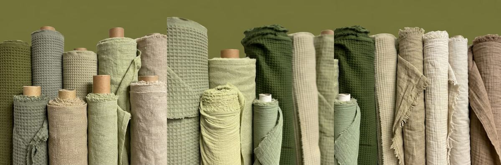
Descrição detalhada da imagem: Rolos de tecido
Rolos de tecido enfileirados, em tons de verde-oliva, verde-claro, bege e creme, com texturas de waffle, linho e gaze, diante de um fundo verde-oliva liso.
Fonte: [a informar]
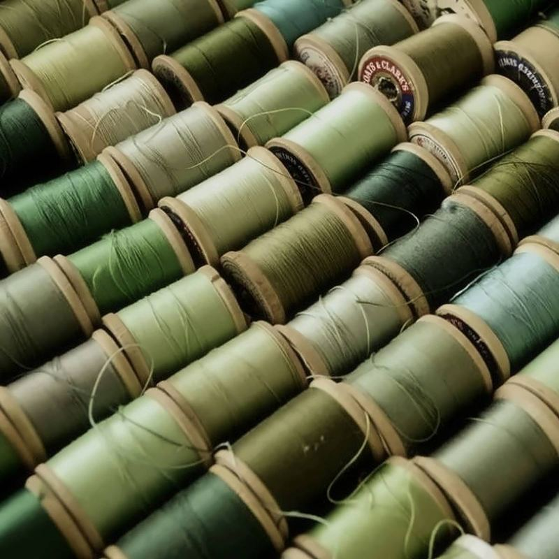
Descrição detalhada da imagem: Carretéis de linha
Carretéis de linha de costura em tons de verde-oliva, marrom e vermelho-escuro, vistos de perto e dispostos lado a lado.
Fonte: [a informar]
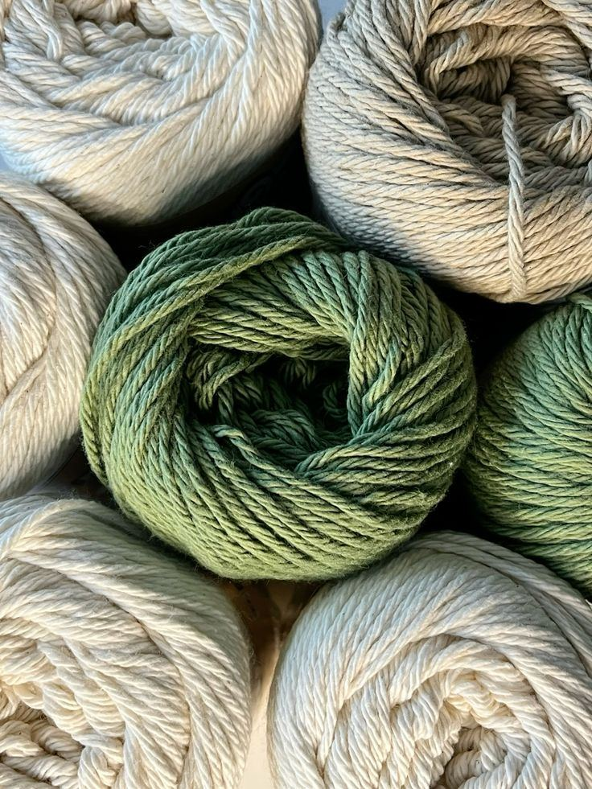
Descrição detalhada da imagem: Novelos de fio de algodão
Novelos de fio de algodão grosso e retorcido, vistos de cima, em tom cru e em verde com variações de cor.
Fonte: [a informar]
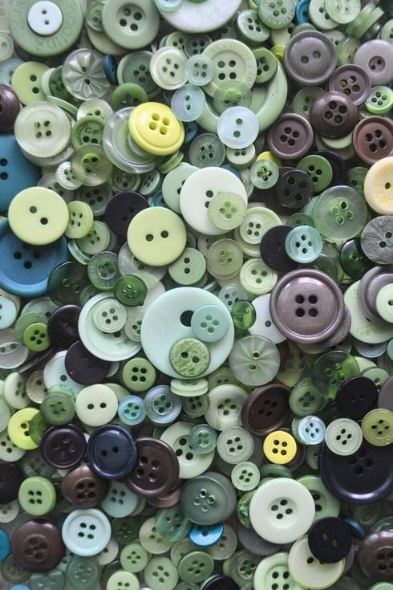
Descrição detalhada da imagem: Botões reaproveitados
Grande quantidade de botões misturados, de tamanhos e formatos variados, em tons de verde, cinza, marrom e azul-petróleo, com alguns amarelos.
Fonte: [a informar]
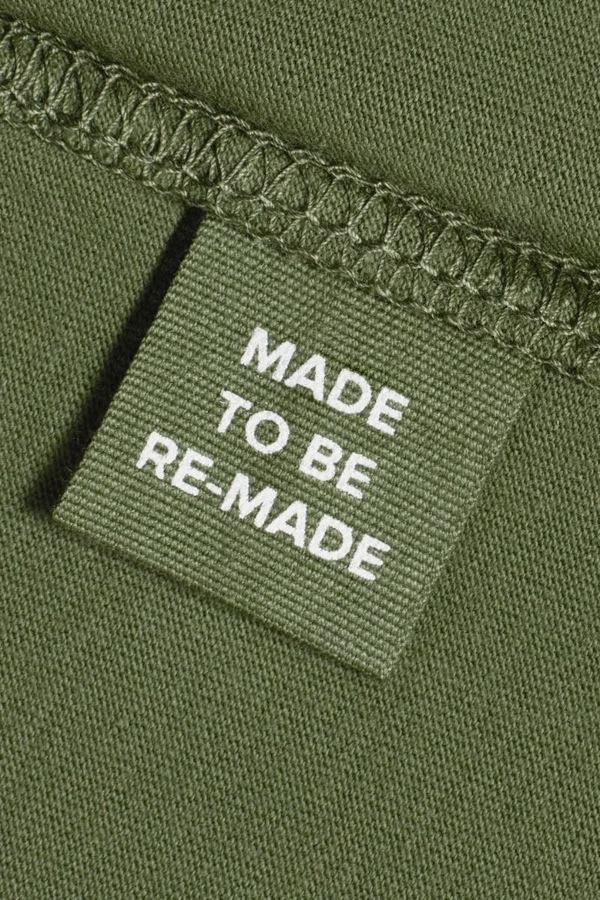
Descrição detalhada da imagem: Etiqueta Made to be re-made
Etiqueta de tecido costurada em uma peça verde-oliva, com a frase em inglês Made to be re-made, que significa feito para ser refeito, em letras brancas, ao lado da costura da gola.
Fonte: [a informar]
Processos
Do tecido à peça pronta: veja como cortes, costuras e acabamentos dão nova forma às roupas.
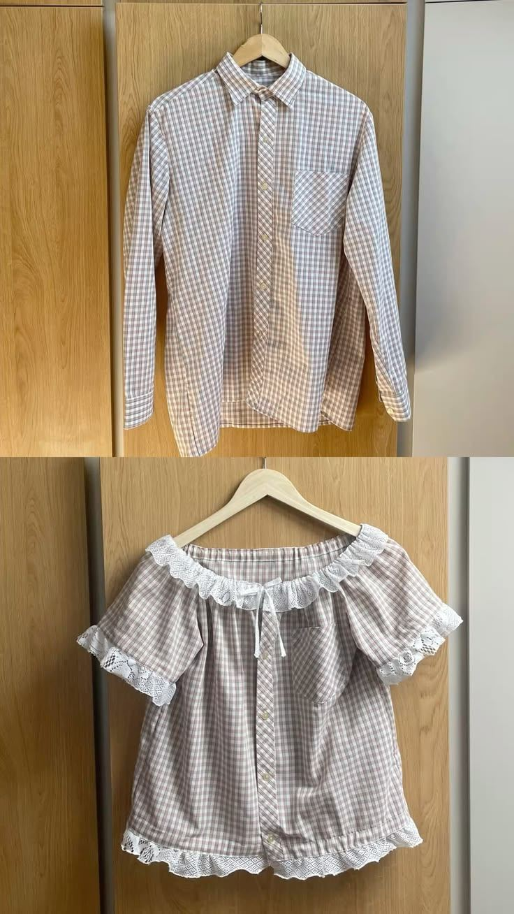
Descrição detalhada da imagem: Camisa xadrez que virou blusa de renda
Imagem dividida em duas partes, uma sobre a outra. Em cima: camisa de manga longa com xadrez miúdo em tons de bege, rosa e azul-acinzentado, com bolso no peito e botões claros, pendurada em um cabide de madeira diante de um armário de madeira clara. Embaixo: blusa de mangas curtas com a mesma estampa, decote largo com elástico e babado de renda branca, laço de fita na frente, babado de renda na barra e nas mangas e botões na frente, pendurada em um cabide diante do mesmo armário.
Fonte: [a informar]
Entender o upcycling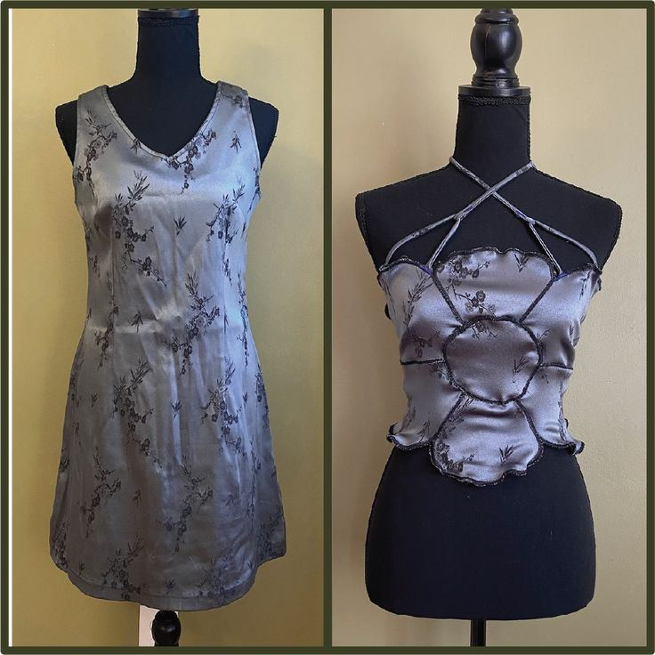
Descrição detalhada da imagem: Vestido de cetim que virou top
Imagem em duas partes lado a lado, com moldura verde-escura. À esquerda: vestido curto de alças largas e decote em V, em tecido acetinado cinza-azulado com estampa de flores e galhos pretos, vestido em um manequim preto. À direita: top frente-única no mesmo tecido, em forma de flor, com alças finas cruzadas no peito, pétalas na barra e acabamento em linha escura, em um manequim preto.
Fonte: [a informar]
Entender o upcycling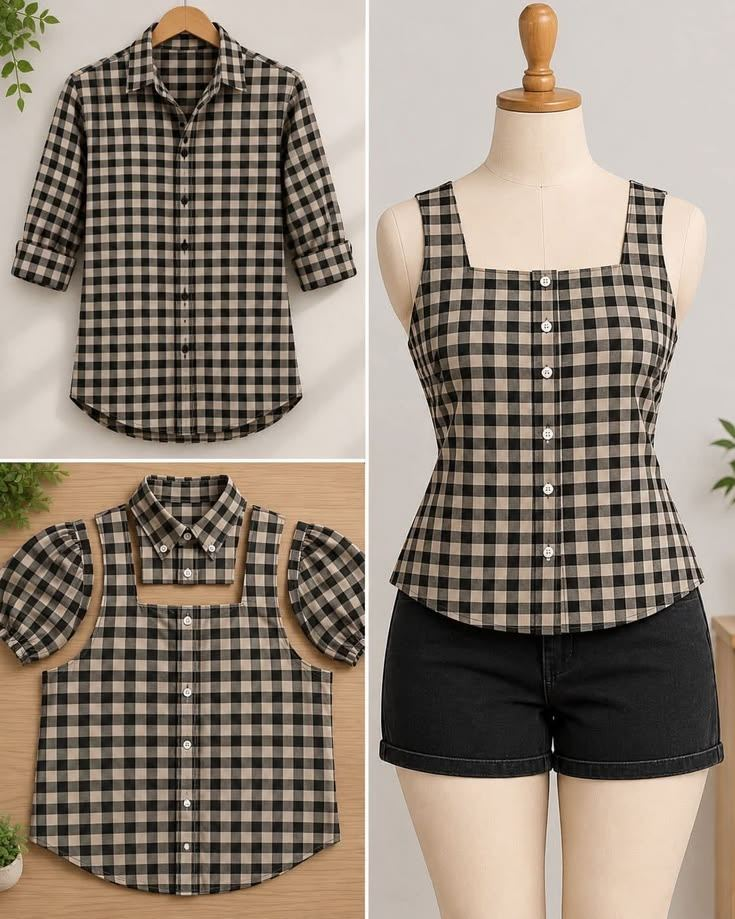
Descrição detalhada da imagem: Camisa xadrez que virou regata
Imagem em três partes. No alto, à esquerda: camisa de manga longa com xadrez preto e bege, em um cabide. Embaixo, à esquerda: as partes cortadas da camisa, com colarinho, duas mangas bufantes e o corpo com botões, sobre uma mesa de madeira. À direita: regata de alças largas, decote quadrado e botões na frente, no mesmo xadrez, em um manequim, combinada com short preto.
Fonte: [a informar]
Entender o upcycling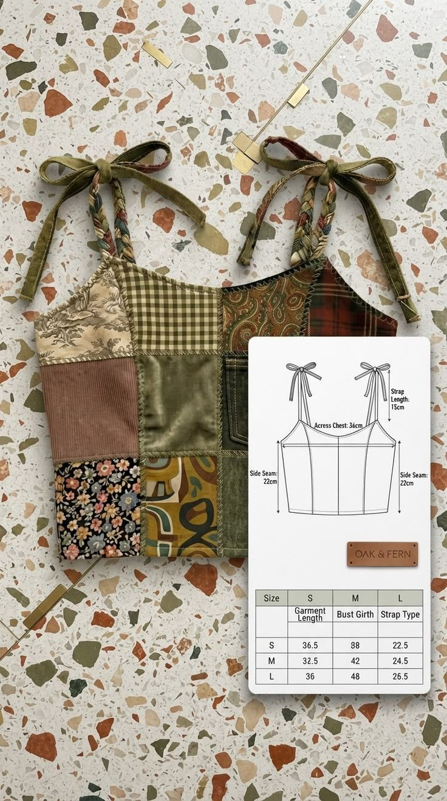
Descrição detalhada da imagem: Regata de patchwork com retalhos
Regata de alças trançadas amarradas em laço, feita de quadrados de retalhos: tecido com estampa de flores, xadrez verde, estampa marrom com arabescos, veludo verde, veludo cotelê rosado e jeans, sobre um piso de terrazzo colorido. Ao lado, uma ficha técnica com o desenho da peça, medidas e tamanhos escritos em inglês, e uma etiqueta de couro com o nome Oak & Fern.
Fonte: [a informar]
Entender o upcyclingPrefere Ver e Ouvir?
Na página de mídia você encontra vídeo e áudio sobre moda sustentável e o trabalho dos ateliês.
Quer Mostrar o Seu Trabalho?
Envie fotos do seu processo ou da sua peça pelo formulário de contato e fale com a nossa equipe.